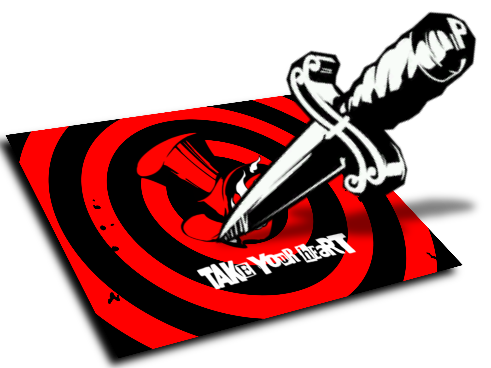

About Me
Hi there! My name is Juliette, and my passion is video games! I love playing them, but I specifically want to know how to make them! I love cooking, and my cats, and it honestly makes my day to hear about the wonderful and amazing Meowharaja Siggy.
My Goals In Life, Not Soccer
My goal in life is to become an indie game developer. Maybe not big time, but I at least want to make a moderate amount of fans in the future. If I ever got to the level of Balatro or Stardew as an independent indie creator, my life goal would be met.
Link to Great Study Music
This is one of my favorite games, and one of my favorite things to listen to while I do notes/study. I got the idea when the professor talked about Tears of the Kingdom music (amazing game btw, highly recommend)
"Ah, You're Back."
The Phantom Thieves of Hearts Have Come To Take Yours
